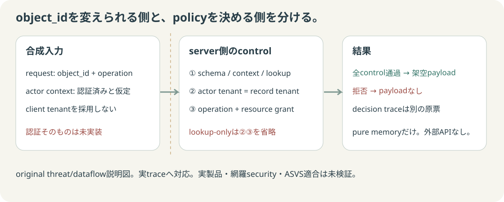

まず予想：object_idだけを変えたら？
固定架空2 tenant・2 actor・4 records。認証そのものは未実装です。選択は保存済み原票の表示だけで、外部requestや実攻撃は行いません。
① lookup-only
schema/actor/対応operationは検査するが、objectのtenant/grantは検査しない。
② controlled
tenant一致 AND operation/resource ID/type grant。拒否bodyにpayloadなし。
入力とcontrol traceを対応させる
仮定したtrusted context
token・password・session検証は実装していない。contextの正しさを上流に仮定。
合成request
clientからactor/tenantを設定するfieldはない。余分なfieldは拒否。
lookup-onlyのdecision trace
controlledのdecision trace
traceは架空の診断原票。実public endpointの情報公開設計ではありません。
Threat / dataflowの境界

original説明図。上の実traceに対応。static previewはhandler APIではありません。
独立権限matrixと全実出力
| Actor | Resource | Operation | 独立期待 | lookup-only | controlled |
|---|
架空fixture / policyを見る
次に学ぶ問いと小実験 — 4本とも未実施
01 trusted actorを確立する
認証・session lifecycle。正規/偽造/期限切れの架空credentialからcontextを作り、拒否を比較する別教材案。今回はactor contextを仮定。
API2:2023 — Is the API Vulnerable? / How To Prevent02 objectとfieldを分ける
property-level認可・最小開示。公開/内部fieldの架空recordにrole別projectionを適用し、独立field matrixと列を比べる案。今回はfield制御なし。
API3:2023 — How To Prevent03 checkとuseの間を検査する
policy/DB整合・TOCTOU。隔離storeの所属/権限をcheck後に変え、旧snapshotとatomic条件付き取得を比較する案。今回は不変memoryだけ。
CWE-367 — Description / Potential Mitigations04 入力の型と資源上限を分ける
解析・可用性・sink防御。制限付きparserの長さ/深さ/不明field境界を観測する案。入力検査だけでSQL/XSSや認可を解決したと扱わない。
Input Validation — Strategies / Parse Safely, Then Validate実験案は未実行。cryptography/TLS、supply chain、network隔離、logging/incident、secure SDLC/compliance等の主要未教材はREADMEへ。ASVS公式入口 — version付きrequirementsの参照も次の学習入口であり、合格creditではありません。